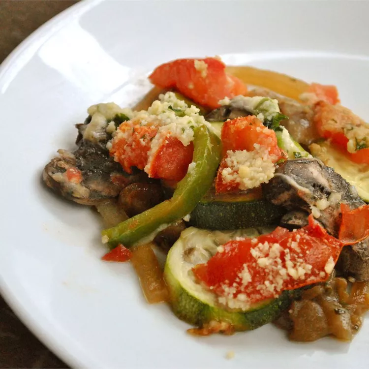

Ratatouille

Description
Ratatouille is a French Provencal dish that consists of stewed vegetables. Though recipes and ingredients vary, there are some ingredients that are almost always used: eggplant, tomatoes, zucchini, onions, and bell peppers.
Ingredients
- 2 finely chopped garlic, half
- 3 tbsp olive oil
- 1/2 eggplant
- 2 zucchini
- 2 tomatoes
- 3 fresh mushrooms
- 1 onion
- 1 red/green bell paper
- Pinch of dried parsley
- Salt to taste
Steps
- In a skillet, cook the garlic in olive oil. Add the eggplant, parsley, and salt.
- Cook until the eggplant is tender, then spread the mixture in a prepared casserole dish and sprinkle with Parmesan.
- Spread the zucchini on top and sprinkle with more cheese. Continue layering according to the instructions in Step 3.
- Bake the ratatouille in the preheated oven until the vegetables are tender. Season with the parsley and serve hot!
Return